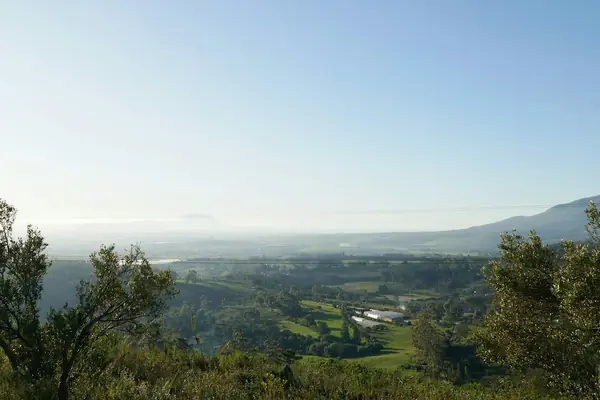

Home › Wine regions › Paarl
Paarl wine region

Photo: Anna Sullivan on Unsplash
Warm valley below the granite domes of Paarl Mountain, historic heart of the Cape wine industry.
Cape vineyards between two oceans, prized for Chenin Blanc, Pinotage and Bordeaux-style blends.
Climate and soil
Warm Mediterranean climate inland from the coast, with hot dry summers moderated only partly by sea breezes; irrigation is common. The Berg River runs through the valley, and soils range from decomposed granite on the slopes of Paarl Mountain and the Simonsberg to sandstone and Malmesbury shale on the flatter land.
Key areas and appellations
Coastal Region, Simonsberg-Paarl, Voor Paardeberg, Agter-Paarl
Good to know
Paarl means "pearl", after the granite domes that glisten after rain. The town has been home to KWV since its founding in 1918 and to the Nederburg Auction, and the district once also took in Wellington and Franschhoek, which are now districts of their own. Today Paarl is known for generous Cabernet blends, Shiraz and Chenin, with cooler, prized sites on the Simonsberg slopes.
The grapes of Paarl
- Chenin Blanc (white): apple, quince, honey. Best known in Loire, South Africa.
- Cabernet Sauvignon (red): blackcurrant, cedar, graphite. Best known in Bordeaux, Napa Valley, Coonawarra.
- Syrah / Shiraz (red): blackberry, pepper, smoke. Best known in Rhône, Barossa, Washington.
- Pinotage (red): blackberry, plum, smoke. Best known in South Africa.
- Chardonnay (white): apple, lemon, butter, oak. Best known in Burgundy, California, Australia.
Notable producers in Paarl
- Vilafonté
- Fairview
- Glen Carlou
- Backsberg
- Nederburg
- KWV
- Rupert & Rothschild Vignerons
- Babylonstoren
- Vondeling
- Avondale
Paarl wines to try
Vilafonté Seriously Old Dirt
Paarl · Cabernet Sauvignon, Merlot, Malbec
Ripe, polished Cape blend.
Food: Lamb, steak
Vilafonté Series M
Paarl · Merlot, Malbec, Cabernet Sauvignon
Plush, Merlot-Malbec Cape blend.
Food: Beef, game
Glen Carlou Chardonnay
Generous Cape Chardonnay: baked apple, citrus and buttered toast, rounded but kept in line by a lemony finish.
Food: Cape Malay fish curry, crayfish thermidor
Food to try with Paarl wines
- Steak: Firm tannins in Cabernet and Tempranillo cut through the fat and char of a seared steak, while peppery Shiraz echoes the sauce.
- Salmon: Salmon is rich enough for a light red: low-tannin Pinot Noir won't clash with the oily fish, and creamy Chardonnay matches its texture.
- Roast chicken: Roast chicken is a versatile partner; lightly oaked Chardonnay or a soft, low-tannin Pinot Noir or Merlot suits crisp skin and savoury gravy.
- Roast leg of lamb: Lamb's rich fat and rosemary call for structured reds; Cabernet's cassis and cedar and Rioja's savoury oak are the classic partners.
- Shepherd's pie: Peppery, juicy Grenache and Shiraz match savoury lamb mince and gravy without overwhelming a homely dish.
- Roast turkey: Lean turkey and its many trimmings need light, fruity, fresh wines; Pinot Noir, Beaujolais or Chablis won't overpower the meat.
More wine regions in South Africa
The Wine Reference newsletter
New wines, stories and career guides, one email a week at most.
Over 18s only. Unsubscribe any time with one click. Your email is stored securely by Kit and never shared.
Support The Wine Reference
This guide is free, with no paywall. If it helped you choose a bottle, you can buy me a glass and keep it growing.
🍷 Buy me a glass